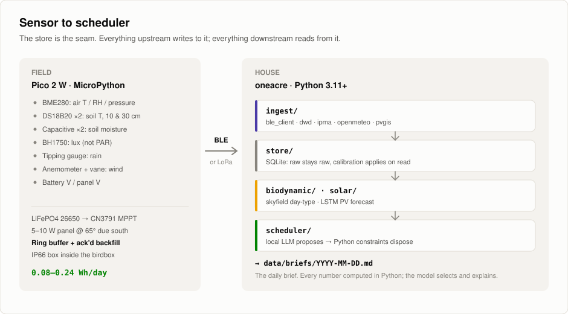
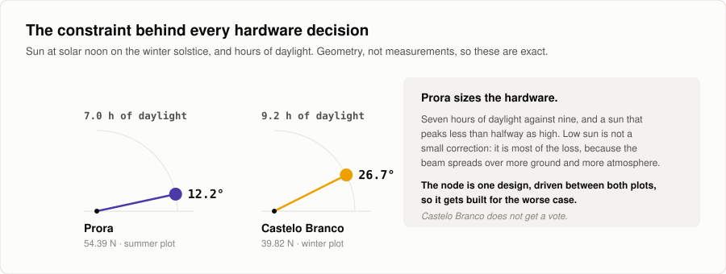
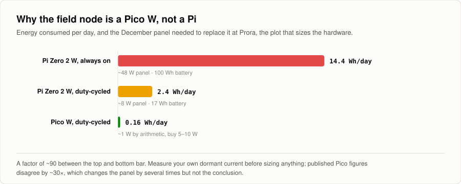
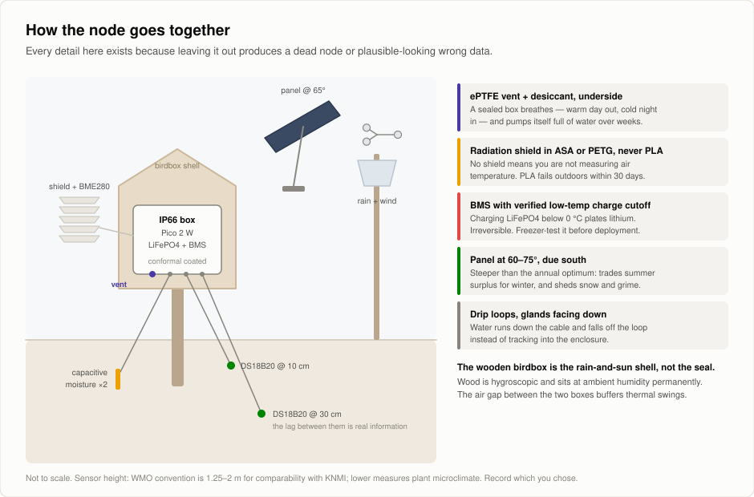
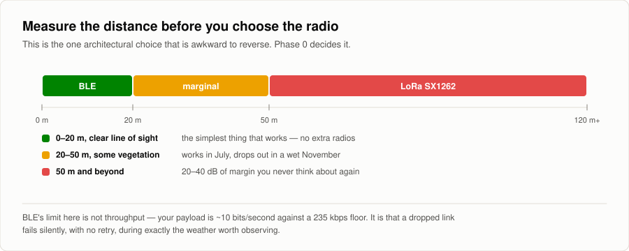
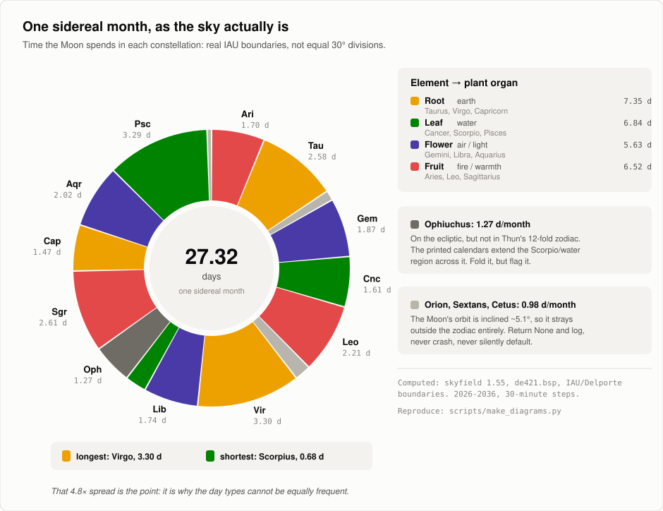
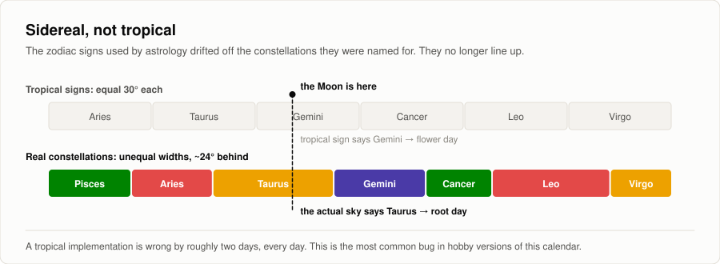
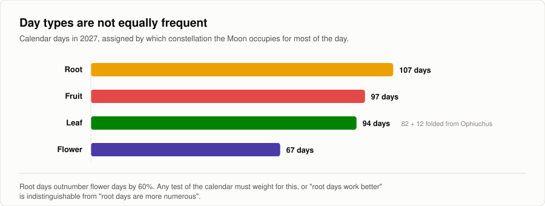
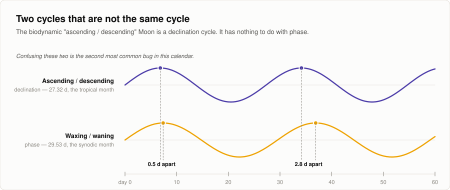
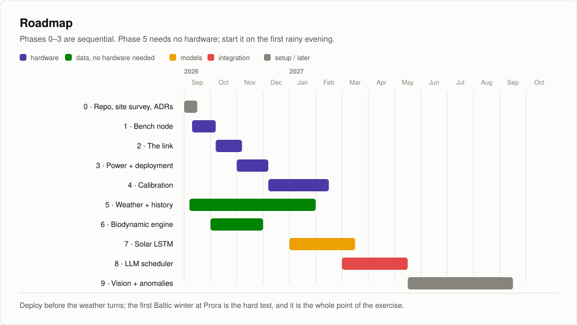

One Acre, Zero Dependency.
Off-grid boeren met AI op twee percelen, 2.256 km uit elkaar: Prora in de zomer, Castelo Branco in de winter. Eén vraag: hoeveel van de dagelijkse beslissingen op een kleine boerderij kan AI die echt off-grid draait aan, van sensor tot planner?


Twee percelen, één seizoen
Prora draait in de zomer, Castelo Branco in de winter. Samen kennen ze geen maand waarin niets groeit.
Niets verlaat de akker
Van zon naar sensor naar laptop naar planning. Het model draait lokaal; alleen zo overleeft de off-grid-belofte de eerste factuur.
Het model stelt voor, Python beslist
Elk voorstel gaat door een deterministische set regels voordat het een taak wordt. Wat niet door de regels komt, valt af, en dat wordt gelogd.
~/what it does
Sensor, historie, kalender, model.
Een veldmodule op zonne-energie (Birdbox) verzamelt bodem- en lokale weergegevens. Het historische archief van Open-Meteo voegt twintig jaar regionaal weer toe. Eurostat levert regionale opbrengstcijfers, en die zijn grof: per jaar, per hectare, per regio, niet per bed. De Thun-kalender levert een zaaikalender op basis van de maan, die dit project correct berekent en test in plaats van aanneemt.
De berekeningen draaien in Python. Een lokaal model legt de uitkomsten naast elkaar en stelt voor welke gewassen per aanplant de beste opbrengst geven, wanneer u zaait en welke vruchtwisselingen werken op 4.000 m².
Het doel: iets waar boeren, hobbytelers en gezinnen op kunnen bouwen om biologisch te telen op elke schaal, met moderne techniek en eeuwenoude concepten die de aarde beschermen.
~/where
Twee percelen, 2.256 km uit elkaar.
14,6 breedtegraden uit elkaar. U volgt het groeiseizoen in plaats van ertegen te vechten.
Prora zomer
- waar
- Rügen, Duitse Oostzeekust
- breedtegraad
- 54,39 °N
- referentie
- DWD Arkona, station 00183, 33 km noordelijk
- winterzonnewende
- 7,0 uur daglicht, zon op hoogste punt 12,2 °
Castelo Branco winter
- waar
- Midden-Portugal, binnenland
- breedtegraad
- 39,82 °N
- referentie
- lange reeks van IPMA, plus ERA5-Land
- winterzonnewende
- 9,2 uur daglicht, zon op hoogste punt 26,7 °
Prora leunt op DWD Arkona, met gemeten straling vanaf 1947. Castelo Branco heeft geen vergelijkbare open historie en leunt op ERA5-Land. Die asymmetrie wordt niet weggepoetst.
~/commitments
Drie dingen waarop niet wordt ingeleverd.
Off-grid is off-grid.
Geen cloud-LLM in de dagelijkse cyclus.
Elk getal draagt zijn foutmarge.
Een sensor van € 30 die ±0,3 pH claimt, mag de pH niet tot op één decimaal rapporteren.
De kalender is een hypothese.
De biodynamische kalender wordt getest; het is geen planningsregel.
~/the field node
Een Pico, geen Pi.
Tik op een afbeelding om die op volle grootte te zien.








~/the calendar
De Thun-kalender, eerlijk geïmplementeerd.
Het bewijs ondersteunt het trigoon-effect niet. De kalender wordt daarom gelogd als covariaat en getest, nooit gebruikt als regel.








~/models
De LLM stelt voor, Python beslist.
Elk getal wordt berekend in geteste Python. Het model selecteert, prioriteert en licht toe, en levert JSON die tegen een schema wordt gevalideerd. Wat niet door de regels komt, valt af, en dat wordt gelogd. Waar het op mikt: opbrengst per vierkante meter.
~/roadmap
Tien fasen.


~/see the real thing
Lees het plan. Lees de code.
AI-Homestead
De repo. Bouwplan, ADR's, databronnen en de figuren op deze pagina.
PDFProjectoverzicht
Korte brief. De twee percelen, de drie uitgangspunten, en wat elke databron wel en niet kan claimen.
MIT voor de code. Weergegevens van DWD (CC BY 4.0), IPMA en Open-Meteo (CC-BY-4.0). Efemeriden van JPL via skyfield. Er worden geen auteursrechtelijk beschermde kalendergegevens verspreid.
~/next
Dezelfde grondigheid,
uw probleem.
--:-- in Kaunas · kantooruren · ma t/m vr, 10:00 tot 18:00